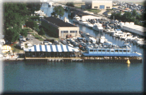
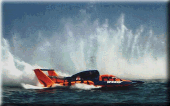

Judges Stand seating is broken up into two areas, the Veranda and the Skybox. These can be seen in the photo below. The blue building on the right is the Judges Stand with its covered Veranda, and the blue & white tent is the Skybox area.
These passes are $150 each in quantities of four or more, or $175 for 1-3 passes. Included are a Sunday catered lunch, a free Gold Cup Pit Pass, a souvenir race program, and a scoring printout after each heat.
For parking information, see the Judges Stand Parking info.

In the photo above, the yellow bouy in front of the Judges Stand is the official mark for the Start/Finish Line. The 'gun' used to start the race is right on top of the Judges Stand, and is more of a small cannon... it can make quite a boom. Most of us love the excitement of it, but if you're sensitive about such things, you may wish to consider another viewing area.

The Judges Stand is near the middle of the 'front straightaway', and the boats are really moving when they go by. This area has a great view of the racing action.
 Return to the Ticket Info page.
Return to the Ticket Info page.
All contents Copyright © 1997 Spirit of Detroit THUNDERFEST, except where noted.
Web page created by Brian Reed.
 Return to the Top THUNDERFEST page.
Return to the Top THUNDERFEST page.
All Rights Reserved.